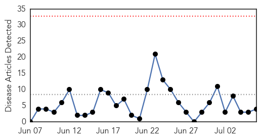
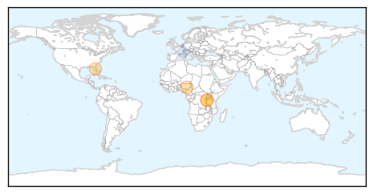
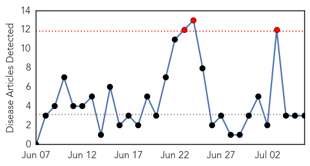

Cholera
30-Day Web Trend
0 alerts, 0 warnings

30-Day Twitter Trend
1 alerts, 0 warnings

Article Locations
Article Confidences
Top Articles:
- 0.997
- UN: cholera outbreaks can be controlled thanks to vaccines, water and sanitation
- 0.997
- WHO says cholera outbreaks can be controlled, recommending use of oral vaccines
- 0.980
- Eight dead as Plateau confirms 167 cases of cholera -
- 0.951
- Protecting yourself from rare flesh-eating bacteria found on Florida’s beaches
Top Tweets:
- 0.707
- RT: Ministry of Health, @WHO and partners score some victories in responding to cholera outbreak in SouthSudan http://t.co/ksGGw…
- 0.705
- WHO & partners responding to cholera outbreaks: Using improved water & sanitation practices Oral Vaccines + Surveillance + Awareness
Meningitis
30-Day Web Trend
3 alerts, 0 warnings

30-Day Twitter Trend
0 alerts, 0 warnings

Article Locations

Article Confidences

Top Articles:
Top Tweets:
-
No tweets found for Jul 06, 2015